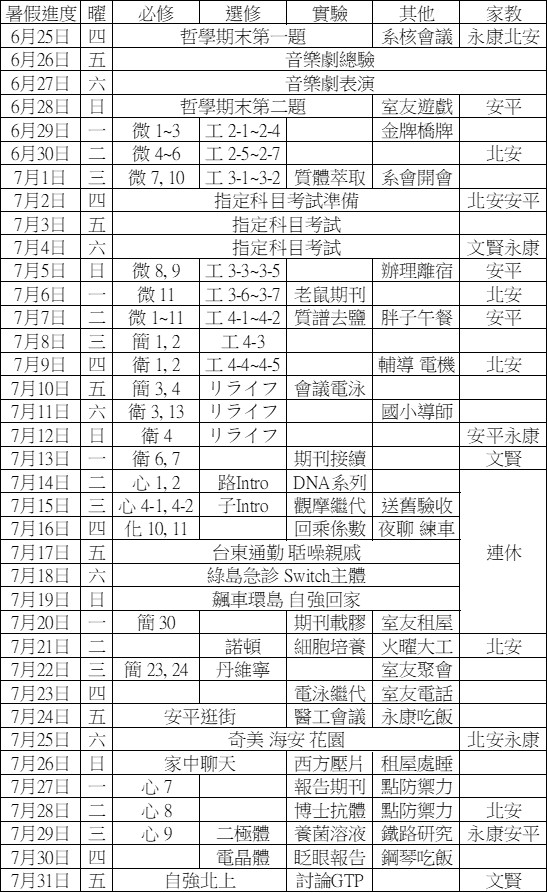
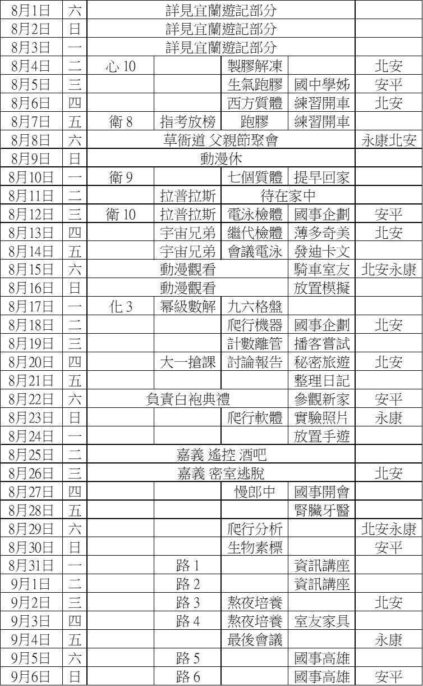
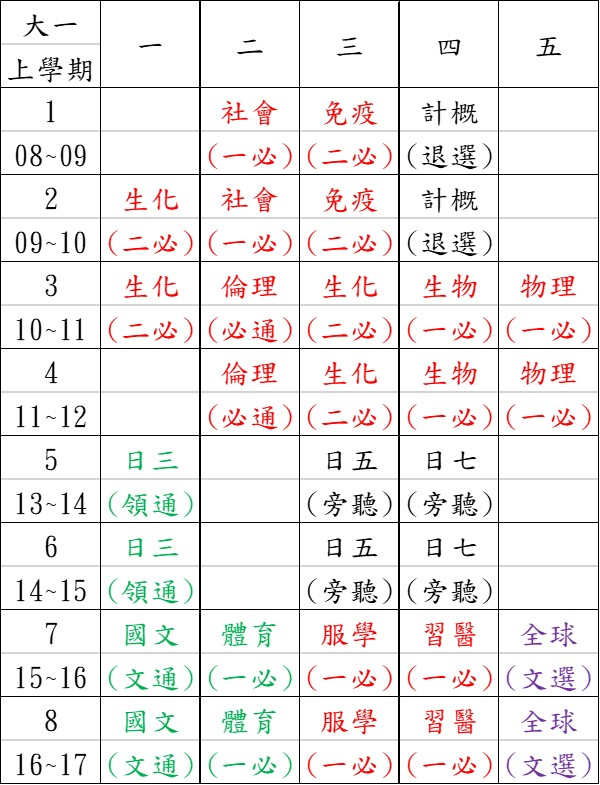
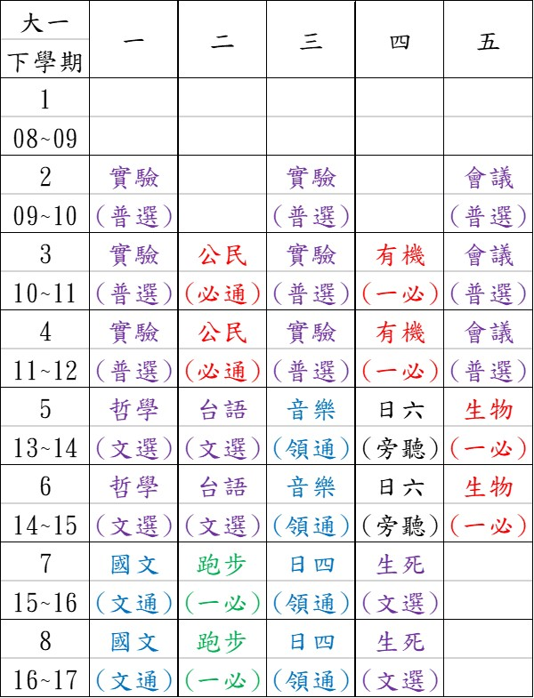

心情小札
呆呆小熊
| Name | : | Dumb Little Bear |
| Interest | : | Not to eat |
| Talent | : | Sleeping |
| Address | : | My Alley (The Observable Universe) |
| Contact | : | Telepathy or Teleport |
成功大學
大二生活
大一生活
大一暑假
課表
暑假前半
暑假後半
大一上
大一下
-
September
09/07 各種加簽失敗普心教授改觀
09/08 連續上十堂課送舊活動遊戲
09/09 懷念微積分課難得擁有空堂
09/10 加簽喪葬排隊分享西方丟膠
09/11 申請外系門禁卡被問二選一
09/12 室友討論電子電路工數問題
09/13 九州分享橋牌渦蟲搶護理站
09/14 首次結報撰寫模仿醫用物理
09/15 生統看棒球跟肚子餓吃睡覺
09/16 慌忙去實驗室毛毛英文綽號
09/17 黑色香蕉喝到飽喪葬睡影片
09/18 文賢數據分析導致重溫營隊
09/19 做實驗跑膠險乾掉吃心之初
09/20 皮亞諾幫慶生分享買房看法
09/21 實驗地震警報歷史系加簽單
09/22 網球後動力學考試學到一課
09/23 黑蕉飲料免費奇美醫院門診
09/24 期初社大玄米奶茶提早回家
09/25 翹兩堂課早起考駕照險通過
09/26 大學電路補課家教玩反應堆
09/27 三人玩蒸氣用電玩桿打電動
09/28 心理學上出神部員代表大會
09/29 生統常態棒球大聯盟很好看
09/30 去護理站實習被問不吃晚餐 -
October
10/01 開高速公路高雄吃違建燒烤
10/02 回去學習開車排隊吃小赤佬
10/03 印譜巧遇高中台大醫科學弟
10/04 難得無家教上課活動的一天
10/05 心理學都沒人亂停車怕拖吊
10/06 物理課遇學弟煩人議題小組
10/07 二度護理站不食忘了帶單子
10/08 學習軌道軟體電子突然小考
10/09 高中選修化學泥土粗心討論
10/10 打橋牌吃披薩國中生物分類
10/11 效果書局高職用書新課綱書
10/12 學長姐聊尷尬家聚奇怪學弟
10/13 棒球丟臉笑場難得運動扭傷
10/14 討論過分慎重牛排吃飽麵包
10/15 電子不會日文模仿粵語報告
10/16 電路期中傍晚橋牌實驗撲空
10/17 室友故意吃雞排預報寫整天
10/18 開車高雄實境動作角色扮演
10/19 重複一中孟德爾之普物實驗
10/20 提早交卷得清閒到施工總圖
10/21 天氣轉涼縮成一團提早回家
10/22 重溫國小接力第一棒起跑架
10/23 完整一天告別暑期研究報告
10/24 不想寫作業低效率牢騷整天
10/25 整天在家速看航海王全影片
10/26 另一家小赤老點少於五十元
10/27 看無聲棒球大聯盟忘記耳機
10/28 OD聚討論走科薪水彷彿去年
10/29 忘記手機學生證資料夾筆電
10/30 寫護理站心得預寫普物預報
10/31 勝利路氣球活動致騎車永康
-
November
11/01 研發五人橋牌藏計算機之亂
11/02 實驗險遲到忘帶筆錢包證件
11/03 音樂報告時間不足神速結尾
11/04 約談一小時烏龜看醫生灌藥
11/05 國中會考國文考卷不太會寫
11/06 交卷難得兩點回家練習日文
11/07 研究交流電路撰普物小論文
11/08 惡補心理學猜對事先曬烏龜
11/09 是非題下手三十分鐘都交卷
11/10 室友網球翹課棒球影片完結
11/11 金鋤十盤牛肉校慶當星期六
11/12 電子小考不會提議媽媽家教
11/13 忘頒獎去領錢台銀兌換支票
11/14 人權憂鬱遊戲眼科冰牙會長
11/15 室友跟蹤錯人討論像爸事蹟
11/16 實驗難得休假家教補週六課
11/17 電路投機雙答案普物寫不完
11/18 藥物過敏點滴今年四度急診
11/19 電子加時系辦叫人莫名生氣
11/20 違建可可貝里尷尬遇音樂劇
11/21 不情願寫預報說服家教作文
11/22 整理相片檔案練習日文聽力
11/23 實驗缺一人自己一中孟德爾
11/24 普物五分之一及格動力室友
11/25 手術預約提早回家玩舊遊戲
11/26 電子小考每周要考成杏開會
11/27 電路大爆炸公衛翹課打卡板
11/28 提早預先寫完最後期末預報
11/29 列印國事部中央沒給的海報
11/30 實驗丟球普心僅二十人上課 -
December
12/01 中午人權週連十三小時工作
12/02 人權週擺攤有擅長直銷學妹
12/03 電子助教問科系日文問考古
12/04 續香港兩事件沒有瓦斯事件
12/05 室友不講哲偉茶壺煮地瓜葉
12/06 瑞祥高中日檢安平家教秘密
12/07 實驗提早下課系辦講座餐盒
12/08 成杏節目單到底誰去印事件
12/09 問物理辦講座及問哲緯故事
12/10 日檢估分登出日閱通識作業
12/11 壽喜燒狂吃肉譜務沒去應約
12/12 家教騎車大趕工與成杏之夜
12/13 餵烏龜吃飼料熬夜抱怨同學
12/14 下午四點回家睡覺手機不見
12/15 系辦找回手機體育課跑四千
12/16 長榮路橋開通刻意騎車上學
12/17 驚覺隔天考兩科小考沒準備
12/18 電路不會寫錯過OD計畫選擇
12/19 再度早睡早起來回家教訊息
12/20 室友盤子遊戲王寒流穿超多
12/21 普物最後實驗請組員做結報
12/22 通識期末考當場臨時抱佛腳
12/23 在家寫電子小抄上課聽不懂
12/24 差點忘考電路看日文漫畫店
12/25 跟室友的室友在光復打籃球
12/26 高雄林皇宮吃飯講述蟹堡王
12/27 整天在家面臨期末要考八科
12/28 施工後總圖開箱被ㄏ一綁架
12/29 生統有始有終睡覺與沒內容
12/30 室友難得約吃飯專程去上課
12/31 上課狂玩摩爾莊園氣溫結凍
-
Janurary
01/01 整天宅在家裡面讀書抱佛腳
01/02 寒流來襲險有家人載去家教
01/03 向家人講前天紅燈右轉故事
01/04 難得晚起考完普心提早睡覺
01/05 提早交卷趕考生統借計算機
01/06 提早交卷回家首次吃漢堡王
01/07 日文老師說再見與放棄考試
01/08 提早交卷煮過頭高醫看開刀
01/09 趕家教間隔卡片煮過頭結凍
01/10 趕各期末報告油管看連續劇
01/11 複查生統微積分越南僑生聊
01/12 複查電子普物郵寄球拍失敗
01/13 住院旁邊吵換病房讀微生物
01/14 開刀時沒感覺麻藥退血倒流
01/15 睡不著不能拔針所以自費針
01/16 出院很拖補眠鼻填棉花家教
01/17 取代皓室友聊剛出院讀空氣
01/18 吃藥睡到下午家教普物雷同
01/19 室友要分吃飯被推坑天竺鼠
01/20 回診抽鼻血抗生素太早抵達
01/21 巧妙下載通勤聽微生物音檔
01/22 微生物神奇影片陽明學霸聊
01/23 自己騎河堤家教後睡到傍晚
01/24 新家教委託之五年前的回憶
01/25 日檢成績公布待在家曬太陽
01/26 剩習醫未出分藥物性上腹痛
01/27 鼻部大量抽取物與胃部痙攣
01/28 丟球討論丟球網頁首頁更新
01/29 腹腔超音波爆讀怪討論選課
01/30 外公忌日整天吃粥日夜顛倒
01/31 連續家教死撐後來去掛急診 -
February
02/01 急診離院無法飲食
02/02 存錢拼圖歌唱國華糖豆過煮
02/03 急診回診解釋課委講解計畫
02/04 鋼琴老師恐怖遊戲講話太鼓
02/05 國中導師小提琴家討論取代
-
March
03/01
-
April
04/01
-
May
05/01
-
June
06/01
-
September
09/04 醫學餐廳的地下一樓吃午餐
09/05 成功登大人晚會活動吃消夜
09/07 ㄞ寶石密室逃脫闖兩關活動
09/09 化工普化旁聽暨加簽險申請
09/10 洗手約吾高中學妹吃麥當勞
09/11 復學生前往新鮮人之夜表演
09/12 牙套與情聖宿舍裡讀生物學
09/16 一個人約晨泳成大新生座談
09/17 易學聲去國事研及社團博覽
09/18 科班兩人中山堂系桌喝飲料
09/19 除香水大家國事交換與成杏
09/22 唱歌鬼教九月十日情場理論
09/24 軍人在十秒鐘家聚不識學姊
09/25 與抵免二人參加醫學系招工
09/26 戰棋猜聲部二分之一卻全錯
09/27 加分前往咕雞紅醬再度踩雷
09/30 推薦晚餐吃小茂屋巧遇繁星 -
October
10/01 一趴說金牌致科奧辯解沒有
10/02 仰臥起坐挑選國文期中主題
10/03 醫餐與牙醫和一七們吃午餐
10/04 一七約吃午餐卻自己先騎走
10/05 詳見活動相關迎新宿營部分
10/06 詳見活動相關迎新宿營部分
10/07 新手害服學仔桌球一直撿球
10/08 計概考試忘記遇到國慶放假
10/14 醜小鴨審核與肚肚學長吃飯
10/15 體能測試百米情聖明察秋毫
10/16 男高音學長誤認很黑原住民
10/17 宿舍貝爾不等式神人自己來
10/18 長頸鹿飲品社分享汽水水果
10/19 家教肉乾和兇學長上聲樂課
10/20 疊加糾纏醫用物理報告產出
10/21 圈圈吃飯分部練唱弄丟手機
10/22 圖靈測試醫工得知為醫學系
10/23 巴克球的帝雉禮貌人情壓力
10/24 一ㄑ男友關閉哀居社群軟體
10/25 詳見活動相關醫學足球部分
10/26 詳見活動相關醫學足球部分
10/27 禁行機車驚險騎上高架道路
10/28 一迎招工搶答生化期中爆掉
10/29 大隊接力預賽之當候補代跑
10/30 麥當粉和腎臟速食談社會學
10/31 貓頭鷹取一綽號小小兵學長
-
November
11/01 西貢小姐音樂劇解說與發表
11/02 生化期中考學長姐宏祺梗圖
11/04 圈圈聊大學同學肚肚吃晚餐
11/05 趴展日食堂及玩廿人廿一腳
11/06 梁祝報告簡報動畫特效製作
11/07 送直屬歐趴糖班代合唱宵夜
11/08 小屋外與的啦八卦抱怨報告
11/11 校慶小小兵教唱歌送歐趴糖
11/12 普社火速演講醫物期中報告
11/13 日文期中考與服學最後一次
11/14 生物爆掉吃珍珠披薩湯姆熊
11/15 嘴砲明日台大聽老人講障礙
11/18 怪手工人之子簡報電場製作
11/19 圈圈在科教找生殖與幹話師
11/20 半夜氮氧電話好運小熊趴展
11/21 習醫之道最後一堂翹課聊天
11/22 安樂死辯論師傅夏慕尼吃飯
11/23 胖子肚子前往醫學院吃消夜
11/25 國文簡報擷取大家的方程式
11/26 回家讀免疫與子謙免疫筆記
11/27 神戶吃飯與車棚兩小時抱怨
11/28 全球電腦報告分工密室逃脫
11/29 免費抱與吃家聚帶直屬回家 -
December
12/02 成大榜首麥當勞翻聊天紀錄
12/03 合唱加練間醫工設置遙控車
12/04 圈圈借醫師袍同學慶生驚喜
12/05 讓遙控車跑動日文旁聽聯誼
12/06 問毓宏疊加態飛速英文演講
12/09 登出國文圈圈晚餐八卦分享
12/10 與唱歌鬼跟刀羽球打得很爛
12/11 吃鹿杯巧遇金牌與斗高戰校
12/12 生物原核金牌客製測驗九題
12/13 開賽車課義義很醜設計獲勝
12/14 生化第二次期中考又爆掉了
12/15 偉大ㄏ一生日成杏成果表演
12/16 生化鴨子聽雷與認不出組員
12/17 社倫皆討論課技術成杏聚會
12/18 首次翹課跟診與弄丟學生證
12/19 民歌餐廳穿著正裝難得喝酒
12/20 全球停課合唱火鍋桌遊半夜
12/23 生化報告分組國文舊課旁聽
12/24 裝病買便當與打羽球聊八卦
12/25 三點回家與小兵尬聊說不熟
12/26 討論物理合唱抽獎綽號蘋果
12/27 禧哥死看法狂抽梅林奧伯倫
12/28 圖書館讀書前往別人家午餐
12/30 生化報告講太快國文看電影
12/31 趴展跑步八卦獨自共筆跨年
-
Janurary
01/02 聽學霸們談論物理期末考題
01/03 第一次睡過頭真的好可怕哦
01/04 生化爆掉爆掉爆掉爆掉了啦
01/05 免疫共筆喝多多綠血糖不足
01/06 日文粗心小組報告討論生物
01/07 回家拿證錢機醫圖咖啡讀書
01/08 早上不用上課送特製歐趴糖
01/09 期末二連擊後橋牌默契風聲
01/10 國華街看吃飯印以後共筆看
01/11 名牌夾內容物觀看選舉直播
01/12 十一年前外公的回憶啟示錄
01/13 選課之役補下學期線上課程
01/14 脂開會討論宣傳與分工事項
01/15 生酮文案簡報撰寫整理房間
01/16 領網購書籍考場探勘失眠夜
01/17 回味考試找同學聊天失眠夜
01/18 回味考試找國小與作文老師
01/19 一天睡的比三天加起來還多
01/20 ㄏ一狗奴夯姊老人高雄遊玩
01/21 整理從小到大的獎狀與紀錄
01/22 找高中輔師與國中導師午餐
01/23 下載下個學期的各課程檔案
01/24 小時候過五關地玩荒野亂鬥
01/25 守夜晚上五點睡滿十個小時
01/26 拜廟宇發機車逛書局去市場
01/27 麻將回鍋英聯國小同學幹話
01/28 水沙連繩子爬樹泡湯獨木舟
01/29 難吃飯中正預校討論與回程
01/30 纏連肯德基柯南電影與晾衣
01/31 失眠的夜晚與十度下的夜遊 -
February
02/01 前往常常造成發燒的所在地
02/03 尋找科學研究室之教授回信
02/04 有機化學細胞生理學之勉強
02/05 天堂祕笈與ㄒㄧㄒㄧ戴眼鏡
02/06 檢討兩科考卷咖啡館樓舊遊
02/07 與學霸吃飯及困難教學過程
02/08 高雄騎車麥當勞與荒野亂鬥
02/10 史萊姆動漫觀看與台語練習
02/11 台大經濟吃飯量體溫骰子街
02/12 過度謹慎影片全季推銷他人
02/13 有機化學書籍線上課程完工
02/14 蠟筆小新電影不如預告部分
02/17 安平元味屋黑工號日本歷史
02/18 修理電腦備份睡著忘記開會
02/19 二家教間隔騎車逛台南市區
02/20 奇怪家教後復健與健保拿藥
02/21 幫忙家教復健迷路交付共筆
02/22 與表妹回高雄完成狂潮文案
02/23 台中燈會詳見活動相關部分
02/24 忍者工廠詳見活動相關部分
02/25 日記各部分記憶回憶大趕工
02/26 台南一中約口試練習的時間
02/27 復健其他詳見活動相關部分
02/28 遊玩台南詳見活動相關部分
02/29 模擬器使用電腦玩平板遊戲
-
March
03/01 宿舍老人趴展聊天夜間急診
03/02 簽實驗室交警講電話去拜拜
03/03 一中幹課宿舍臥底台比日語
03/04 跟診聊台大筆試抽中小老師
03/05 狗奴金牌上菜射歪宵夜睡眠
03/06 會議推薦上菜狗奴成年晚餐
03/07 國中學弟管風琴與教會踏溯
03/08 長得老與成年水乳踏溯聊天
03/09 實驗室成年傳情蛋餅迷克夏
03/10 體育課難得長跑三點四公里
03/11 心理研究無法作答與玩桌遊
03/12 吃宵夜聊流行樂與夜唱過程
03/13 狗奴秀爆實驗室玩你畫我猜
03/14 元味屋敘舊安平去高雄慶生
03/15 成大人之道與石頭選訓回憶
03/16 國文找無教室聊系辦爽唱歌
03/17 午餐台語的啦教學練歌走音
03/18 實驗室聊天早回家全聯購物
03/19 上課你畫我猜讀共筆與合唱
03/20 實驗室與航太化工室友聊天
03/21 夜唱飆不了音巨大代溝魚刺
03/22 家教三連擊與急診檢傷三級
03/23 老人狗奴圈圈練台語白紅肉
03/24 台語標準病人合音團帶練習
03/25 實驗泡緩衝溶液吃家聚載人
03/26 合唱讀共筆敬業超晚遺傳學
03/27 數學實驗航太跑步宵夜電影
03/28 跑步麥當勞看別人電爆圍棋
03/30 哲學低分作業室友英雄聯盟
03/31 腸胃醫生測三千軍人聊宿營 -
April
04/01 室友吃新速食玩電腦寫作業
04/02 南女個面多站迷你面當考官
04/03 搭火車高雄慶生表弟論志願
04/04 約南一中巧遇十人小同學會
04/05 台語作業爆氣在宿舍睡隔夜
04/06 基因公民糞書閱讀日文勉強
04/07 密室逃脫麥當勞玩電腦泡麵
04/08 室友騙吃火鍋八卦會冰淇淋
04/09 掉卡片頭暈翹課吃晚餐練唱
04/10 肯德基拍狗奴讀生物吃雞排
04/11 棒球大聯盟的第二代第二季
04/12 得知殞事之二十萬嗜中放射
04/13 回鍋養貓咪糞放置電腦遊戲
04/14 討論醫糾第一次認真上公素
04/15 了解暑期實驗計畫與流程圖
04/16 進金牌宿舍吃宵夜狂玩手遊
04/17 當天來回桃園摺紙燒紙活動
04/18 幫忙慶生吃燒肉讀生物期中
04/19 六百元沉默成本與賺兩千元
04/20 暑期實驗計畫前言部分難產
04/21 各種線上課驗歌當下才視譜
04/22 通識上台示範卡農形式表演
04/23 生物期中考古題臨時抱佛腳
04/24 生物期中考後惡補共筆進度
04/25 室友討論微積分級數展開項
04/26 家教一起練習排列組合計算
04/27 心累模不著頭緒國文課拍照
04/28 審議問題組蒙古嗆義義年紀
04/29 日文課竟無償獲得好吃餅乾
04/30 獲得更改的全新暑研企劃書
-
May
05/01 合音團初次跳舞與走位練習
05/02 嘗試晚上待在宿舍睡覺失敗
05/03 打嘴砲用共編寫出期中報告
05/05 看著稿照念假裝沒討論報告
05/06 古典音樂表演之成發的影片
05/07 有機期中考來不及上通識課
05/08 合音練習撲空偷玩室友電腦
05/09 回嘉義吃合菜玩馬力歐冒險
05/11 跟壽星吃晚餐跟當場拼拼圖
05/12 體育課肚子痛切西瓜跑光復
05/13 玩臉書數字由小點到大遊戲
05/14 合音團跳舞與走位超過子時
05/15 室友閱國文小說吃紅記早點
05/16 與室友去重溫國小冰礦回憶
05/17 細胞生理學惡補期末考進度
05/18 多啦え夢與電感阻抗之比較
05/19 下雨天體育課核心肌群訓練
05/20 用微量滴管做繼代細胞實驗
05/21 合唱團轉捩點刻意淋雨回家
05/22 慶祝考完期中同系吃雙起司
05/25 早起臨時冠狀動脈繞道手術
05/26 審議報告疫苗的社會人口學
05/27 去氧核醣核酸電泳實驗操作
05/28 醫師科學家被高中學弟嗆聲
05/29 道具上下來回以及肢體障礙 -
June
06/01 關鍵少數電影回家完整觀看
06/02 台語期末衛教老師指定裝傻
06/03 西方古典音樂期末考抓作弊
06/04 有機化學發放考很爛的考卷
06/05 實驗室再次遲到被教授通緝
06/07 爆肝論文看不懂之生物作業
06/08 國文學期微小說展版開幕式
06/09 體育課綠豆湯跑步有始有終
06/10 核酸抽質體古典音樂期中考
06/11 生死課與免疫報告組員抱怨
06/12 類鐸受體之免疫報告被問倒
06/13 從中午到半夜耗時總驗活動
06/14 合唱表演吃飯捲被金牌嘴砲
06/15 人權傳承國文頒獎討論生物
06/16 台語影子錄音樂劇爆肝練習
06/17 期末厭世宿舍畫出QRcode版
06/18 都海鮮慶功宴與宿舍摺蓮花
06/19 再度音樂劇彩排爆讀微生物
06/20 國自介影片路易莎客家家教
06/21 為了音樂劇家教乾坤大挪移
06/22 醫餐尷尬串場撲空哲學作業
06/23 嘴課超時壽星慶生八卦地白
06/24 期末考完吃寢聚練劇獲卡片
06/25~暑假開始之詳見暑假進度表
大學生活近況
忙碌程度分析
香港大學
-
August
08/22 自己搭飛機前往香港及住宿
08/23 辦理大學註冊及找導生教授
08/24 辦理多次簽證及香港身份證
08/25 學習會計各報表與記帳循環
08/26 建立新版英文自我介紹履歷
08/27 港大書局各語言書新知探索
08/28 研讀經濟供需彈性導師通信
08/29 科系迎新同系生聊天與吃飯
08/30 宿舍活動華人與中國人聊天
08/31 宿舍肢體障礙學習簡單舞步 -
September
09/01 宿舍港島探索與法國人聊天
09/02 和同層三賭徒學會香港麻將
09/03 宿舍迎新聚會吃棉花糖競賽
09/04 旁聽闖入全日文無中文之課
09/05 首次粵語課程練習講廣東話
09/06 宿舍門牌手工製作
09/07 領取香港身分證件香港居民
09/08 宿舍合唱面試說不會彈鋼琴
09/09 食物調養身體日式料理購買
09/10 粵語教師辦公室一對一講話
09/11 匯豐銀行開戶參加證投學會
09/12 合唱演出練習
09/13 圖書館大探索
09/14 計概研讀開始
09/15 宿舍高桌晚宴
09/16 颱風登入香港
09/17 颱風假新生活
09/18 投資課程旁聽
09/19 密碼學初體驗
09/20 酷炫衍生產品
09/21 保險儲蓄搞定
09/22 個經線上補課
09/23 游泳社初體驗
09/24 系總負責談話
09/25 學習人工智慧
09/26 資產管理演講
09/27 遲到地鐵排隊
09/28 粵語經驗分享
09/29 國小同學敘舊
09/30 試著減肥計畫
-
October
10/01 合唱火鍋聚會
10/02 更動機票時間
10/03 聖詹母斯協會
10/04 廢課初次考試
10/05 學習程式語言
10/06 工程數學探索
10/07 倒數計時開始
10/08 搞定粵語介紹
10/09 電腦旁聽考卷
10/10 機器學習辨識
10/11 裝懂回答旁聽
10/12 香港初次熬夜
10/13 三樓宿舍運用
10/14 高雄親戚聚會
10/15 健保與找學弟
10/16 高中安平活動
10/17 摸莊博宇肚肚
10/18 吵架無法避免
10/19 育樂街末體驗
10/20 高桌晚餐合唱
10/21 百賢初次聚會
10/22 廣東考試滿分
10/23 四堂極難旁聽
10/24 雙重機器學習
10/25 與私銀的連結
10/26 學餐初次體驗
10/27 分組報告繳件
10/28 考試考得很差
10/29 不小心喝咖啡
10/30 國中同組敘舊
10/31 糖果與糞遊戲 -
November
11/01報名投資講座
11/02處理儲蓄事宜
11/03合唱慈善表演
11/04發現新早餐店
11/05聽廣東話演講
11/06個經奇妙成績
11/07中華民國樂團
11/08嘗試股票採購
11/09極限冬日游泳
11/10各領域的書籍
11/11音速日文計畫
11/12迷路粵語買書
11/13債券購買尋找
11/14幫助同學慶生
11/15合唱成發預演
11/16紀念品店採購
11/17音樂分享之夜
11/18日文歌詞計畫
11/19看零的執行人
11/20咖啡企業訪談
11/21柯南警視特輯
11/22捐血初次體驗
11/23遊戲人生劇場
11/24高桌晚宴聊天
11/25熬夜市長選舉
11/26卡夫選舉聊天
11/27學長姐聊外語
11/28期末粵語演講
11/29通識辯論競賽
11/30繳交會計報告
-
December
12/01連續睡覺補眠
12/02放置手遊遊玩
12/03辦理學歷公證
12/04開始準備期末
12/05投資戶口爭論
12/06個人通識報告
12/07小組粵語影片
12/08八合一影印機
12/09慵懶宿舍生活
12/10全球暖化元兇
12/11個體經濟期末
12/12初級會計期末
12/13香港首次感冒
12/14廣東話期末考
12/15強制吃藥控制
12/16電腦玩糞遊戲
12/17首次學校醫生
12/18考古意思意思
12/19數微積分考試
12/20二度離開香港
12/21一中課堂遊走
12/22書局日文購買
12/23修煉小說閱讀
12/24港明騎車返校
12/25一中同學聊天
12/26一中老師聊天
12/27輔導室好地方
12/28巧遇無病柏皓
12/29無病柏皓吃飯
12/30高雄車站探索
12/31高雄親戚聚會 -
January
01/01獨自一人跨年
01/02北飄計畫開始
01/03日文持續勉強
01/04一中學校抬槓
01/05遊手好閒節日
01/06北飄行前準備
01/07北飄台大陽明
01/08北飄北醫政大
01/09北飄旅遊景點
01/10北飄一路向南
01/11實習國小吃飯
01/12三度抵港宿舍
01/13處理開學旁聽
01/14弄丟宿舍鑰匙
01/15瞭解私人銀行
01/16通識選課技巧
01/17出爛成績日子
01/18掛號學校醫生
01/19柏皓照片分享
01/20電腦香港送修
01/21病英學霸幹話
01/22銀行協會講座
01/23學校就業博覽
01/24書店看霸王書
01/25學測考題試寫
01/26學測表妹分析
01/27游泳桌球體驗
01/28生物老師講話
01/29瞭解投資銀行
01/30總經實作爆炸
01/31學校電腦作業
-
Feburary
02/01宿舍年大掃除
02/02新設投注戶口
02/03機捷預辦登機
02/04年菜高雄巧遇
02/05糞game晨瑋聊
02/06彰化桃園親戚
02/07宜蘭宅打麻將
02/08總桌遊海龜湯
02/09剪頭髮及軒誼
02/10吃午飯彈鋼琴
02/11補六天睡眠債
02/12拿回維修電腦
02/13義大利文唱歌
02/14拉普拉斯轉換
02/15宿舍自己煮飯
02/16國中舊文回顧
02/17哈爾濱人游泳
02/18虛擬貨幣演講
02/19系總法律演講
02/20結算上季股票
02/21投銀工作介紹
02/22程式重新回顧
02/23高桌加拿大人
02/24音樂軟體試玩
02/25學測成績統計
02/26第二銀行開戶
02/27系上同學吃飯
02/28巧遇高中同學 -
March
03/01投資銀行介紹
03/02連結企業準備
03/03連企主席準備
03/04連企投資銀行
03/05連企演講聆聽
03/06連企證券模擬
03/07連企心得想法轉捩
03/08忘記通識作業寄信繳交
03/09首次惡補趕各科作業
03/10美國理科學霸討論醫科
03/11海外債券首次購買成功
03/12發布學測文氏統計數據
03/13香港台灣保留醫科聊天
03/14未來牙醫討論讀醫學系
03/15履歷模板寫作教學活動
03/16帶源老師討論讀醫學系
03/17台大醫師討論讀醫學系
03/18解剖骨頭中文英文背誦
03/19天文通識遊戲搶答課程
03/20國中數學厲害同學聊天
03/21期中考前資訊科技演講
03/22日文動畫練習日文聽力
03/23航海王動畫快速看影片
03/24研讀免疫學與生物化學
03/25同學備審聊回憶與修改
03/26德州撲克八年記憶覺醒
03/27表妹同事小孩備審修改
03/28象棋麻將撲克初次試玩
03/29海洋公園持有年票遊玩
03/30合唱信興學院末次表演
03/31香港日文漫畫書店購買
-
Ready to be back
04/01初次微波省錢煮太多菜
04/02線上英文解剖心理課程
04/03騎腳踏車打出果汁運動
04/04沒兒童節晚上忙飛一波
04/05
04/06深潛飆車
04/07牙素爸媽隔閡
04/08輔師請客廢移民署回港
04/12學校高桌中國數學聊天
04/13更新摯友貼文功能消失
04/14健保預算估算表格查勘
04/15怪手工人之子說變可愛
04/16BPCE撿到槍的學弟聊天
04/18香港同學講實話當幹話
04/19保險公司家人吃茶餐廳
04/25做奇怪的夢
04/30結算月生活費二一七元
05/01國中同學拉直銷投資品
05/05發現自己不知數甲範圍
05/07協助高中同學拚轉學考
05/10香港面試教學五毛談話
05/11高中版談香港讀書心聲
05/12陪圈圈抵港難得遇品瑞
05/13圈圈吃宵夜去港中大玩
05/14圈圈陪梯咪港大看夜景
05/16失眠忘記帶身分證下山
05/17阿元來了真的很好吃哦
05/18雲端表格設計玩西洋棋
05/19估狗相簿備份照片失敗
05/20直屬約波哥卻不知在哪
05/21同儕心中學霸香港出遊
05/22深圳一日遊竟被查護照
05/23提早交卷結束這個學期
05/24失眠看那些年重複組合
05/25立旗寫下香港一年遊記
05/26抵達台灣
05/27前往台南一中
05/28吃好吃的麥當勞
05/29玩大學生賓果 -
Summer Vacation
06/01約安平遊玩
06/04回去玩國小糞遊戲
06/10去夜店
06/11早上七點去一中
06/12怪手工人戰勝同儕學霸
06/13分享憨包無尾熊的文章
06/14跟同學唱歌退香港機票
06/15高中同學密室逃脫失敗
06/16台江車壞在家玩桌遊
06/19翻閱自己一歲的書
06/21高中同學研究大學選課
06/26成績揭曉
06/27撰寫香港遊記
06/29海洋公園
07/08在台南出車禍
07/16地震八卦版
07/23前往日本特急補票日文購票
07/24大阪各大神社
07/25京都
07/26伊賀
07/27奈良
07/28大阪
07/29
07/30
07/31鐵道博物館
08/01回台宇宙兄弟漫畫回顧
08/06營前訓BPCE營隊
08/09看別人駭入黑白棋程式
08/11去軒誼家馬力歐開賽車
08/14辦理BPCE營隊擔任教學
08/15辦理BPCE營隊ㄌㄌㄒ聊
08/16復學辦理成功與慶功宴
08/17警大一日遊
08/18整理東西
08/20發燒
08/26微不幸劇場完結
-
實習機會
大學端承諾提供眾多的實習機會，但許久後才知道，機會不屬於自己的。
大學生活對許多台灣人來說，是一個擺脫高中束縛，可以玩四年的地方。
但是對於生活在極度資本主義國家的人民，大學僅僅是一個職業訓練所。
如何盡快地跳出象牙塔，進入紙醉金迷的名門公司，才是這條路的終點。
對金融業來說，大學學歷只是張白紙，好學校不過是稍微精美的紙而已，
（但若學校名聲跟衛生紙一樣，太易取得又不耐用的話則是另一件事了）
因此，唯有在上面進行五彩繽紛的裝備競賽，才有機會博得企業的目光，
舉凡社團、活動、幹部等，能夠點綴的方式皆無所不用其極地塗在紙上，
當中最重要的是實習經驗，因為這大概是與未來工作內容最相關的事情。
在大部分大學生心中，尋找實習機會，便是尋找進到名門企業的入場券。
要在大四畢業前找一份工作，最佳的辦法是在大三暑假找到留職的實習；
要在大三暑假得到外商實習，最佳的辦法是在大二參加外商提供的活動；
要在大二參加外商給的活動，最佳的辦法是大一有不錯的實習經驗歷程；
因此，大一要能找到不錯的實習經驗，對於申請外商公司來說極為重要。
退而求其次，如果等到大二才能找到一份精美的實習，尚有挽救的餘地，
但如果到那時都沒有找到的話，大概只能和未來的工作機會說聲再見了。
當狩獵實習機會成為大家心中的共識，便會發生獵物不足與飢荒的情況，
通常這時酋長（香港政府）會來分配資源：將獵物限香港永久居民使用。
因此，大概八成以上的獵物受到國籍因素的影響，連嘗試的機會都沒有，
而剩下的則是「一國」兩制的機會，也只有這時候，我們並不是中國人，
再加上外國人在香港禁止打工的情況之下，狩獵的條件簡直是雪上加霜。
記得有一次參加活動，一位人資小姐很興奮地的用粵語和我聊實習機會，
他天花亂墜的向我敘述該實習經驗多好，要怎麼申請才容易成功的資訊，
聊了許久方有人提醒：「你知道他非香港人嗎？這機會是香港人的吧。」
原以為在充滿金融業的地方，實習機會唾手可得，只有些許的優劣之別，
一封接著一封看著學校推薦的，因國籍問題而無法申請的打工或實習信，
參加每一個活動，尋遍每一隅，才漸漸明白，機會從來都不屬於自己的。
註一：以上僅為個人留學經驗，並非每個人皆無法尋獲適當的實習機會。
註二：如果沒有要進入外商公司，無亮眼的實習或大三升大四再找亦可。
註三：台灣人欲找實習保障的話，亦可嘗試暑假回台灣找台灣的銀行做。
-
等待成績
高中的時候，曾以為學校的總務處，是全世界最缺乏效率的地方，
但上了大學後才發現，高中總務處的辦事效率竟然能如此地迅速。
十一月底，當台灣的同學方考完期中，我們的學期課程早已結束；
一月底，當台灣的同學知曉學期成績，我們的學期成績尚未公布。
考一個月的期末，加上超過一個月的等待，為了等一個英文字母。
或許，有人會說：「期中過後，大概就能推算自己的成績了吧！」
很抱歉，港大的期末占過半的總成績，考完也不會公布期末成績。
好的事情是值得我們等待的，但需要等待的事情卻不一定是好的，
畢竟，香港大學的成績是被國際公認過，出了名的嚴苛給分標準。
在台灣，勤奮努力的同學想要獲得三．七分以上的積點並非難事；
但在香港，若能達到此門檻，說出去便引來崇拜，路上走都有風。
看台灣的同學輕鬆「爆四」，香港的台灣同學努力地爬上「三」，
不經為這片成績沙漠嘆息：「酒越陳會越香，成績越泡會越爛。」
為了成績，許多人只好妥協選擇修習原本高中就學過的簡單課程；
為了成績，有些人在選課系統上搏鬥，努力的搶到「甜」的通識；
為了成績，茫茫人海裡的每一位同學，選擇放棄自己的學習原則。
原本以為，只要認真加上堅持，不久後便可以尋覓沙漠中的綠洲，
卻不知不覺間，港大的莘莘學子，在成績的海市蜃樓中迷失方向。
習慣百分制的我，對於只有英文字母配上加減號的評比很不適應。
（或許是因升大學考試，因原始分少了一．○五分而掉兩級分，）
但真正令我無法接受的是：港大永遠不公布分數對應的等級標準。
也就是說，即使考九十分，依舊可能離拿到 A範圍的等級很遙遠。
表面上，大學端會說每堂課都有對應標準，不限制各級距的人數。
實際上，常常會聽到教授抱怨，因為有太多人得到了某級的分數，
而在會議中備受許多人的嚴厲責罵，並強迫教授調低學生的成績。
因此，每一次的考試中，沒有所謂最高的分數，只有更高的分數，
就算能夠期中期末考一百分，依舊需要擔心自己可能搞砸這門課，
畢竟，當很多人都獲得一百分之時，拿到 C範圍也並不是不可能。
當你從頭到尾都看不見自己的各項分數，也不知道成績從何而來，
是否成績會被動些手腳？是否成績登錄時出現小差錯亦無法得知？
無知的大浪正在一點一滴的吞噬著這些在體制下搏鬥的小小庶民。
註一：課桌椅換新卻無新的桌椅。冷氣報修到兩台都壞了仍未修。
註二：香港俗諺：「過三爆四」指盼學業成績積點能越過三或四。
註三：積點由優至劣分為A(+/-),B(+/-),C(+/-),D(+),and F.
註四：以上為個人經驗，並非人人皆和我一樣廢，得不到好成績。
“不要小看微小的力量。如果你每天存下喝一杯奶茶的錢，一個星期後你將能夠買七杯奶茶；南半球的蝴蝶僅需要輕輕揮動牠的翅膀，牠將能夠飛高一點點。一位十二歲的少年，只要經過六年的勤奮努力，他竟能成為一位十八歲的青壯年。這些小小的力量或許微不足道，但卻可能為你的生活帶來巨大的改變。”
“俗話說早起的鳥兒有蟲吃，早睡的宏瑋爆讀怪。要讀書就要學學我室友：宏瑋。每天早上叫醒他的不是鬧鐘，而是爆讀精神。求知若渴、永爆讀勁，他總問：「你今天有爆讀了嗎？今晚我想來點電子電路加工數。」假日前夕的街道，熙來攘往的過客捎來歸心似箭的訊息，窗櫺內的光與影，振筆疾書的十年寒窗，無人詢問卻清晰聽見：「我要假裝都在看動漫,不要碰我的抱枕。」”
陳 宏瑋
“ When life gives you lemons, you wonder about the BLUE BLUE SKY told yesterday. Seriously. All that you can see is scattering, blackbody radiation, and absorption spectrum. Maybe life would cease to exist when you are 0K and would split when wave function collapse. Thus, for the miserable days, try to hear the people sing. If you want help, help yourself, that's how Netwon's third law works.”
重要事件回顧

鼻中膈彎曲手術
十月上旬，用鼻噴劑仍難以呼吸前往奇美看診。
十二月中，前往奇美預約一月中旬開刀可退掛。
手術前夕，無單人房可住打呼換病房吃安眠藥。
手術過程，施打三針手術房有暖氣，無不適感。
術後照護，回病房鼻血倒流，可打自費止痛針。
手術隔天，鼻血回復良多但術後不可服安眠藥。
術後出院，辦批價鼻填充棉花，下午前往家教。
一星期後，取些許少鼻填料，可稍用鼻子呼吸。
兩星期後，取大部分鼻填料，無麻醉較手術痛。
臨時腹痛，去內科照肝膽胃超音波，找無病因。
腹痛加劇，奇美急診抽血各項檢查，開止痛藥。
三星期後，看肝膽科與耳鼻喉科，吞嚥會腹痛。
四星期後，


Contact
布団の中（出たくない）
あたたかい、やわらかい、待っている
だからいつもそばにいてるよ
夢なら未来とか
Email: 知らない